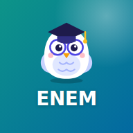

📚 Checklists de Habilidades
Escolha sua prova e instale no celular.
SIS 1ª Série
—
SIS 2ª Série
—
SIS 3ª Série
—
PSC 1ª Etapa
—
PSC 2ª Etapa
—
PSC 3ª Etapa
—

ENEM 2026
—
Feito por João Marcos Valentim — 2C — Lato sensu